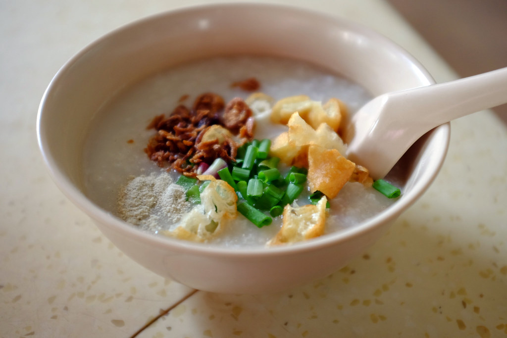

Porridge

Description
This yummy porridge is a staple food for many Singaporeans
It it commonly known as 'zhok' and paired with you tiao cut into pieces
Ingredients
- rice
- shallots
- spring onion
- you tiao
- salt
Steps
- Boil water in a pot
- Reduce heat and simmer until it thickens
- Add shallots, spring onions, you tiao and some salt for flavor
Home